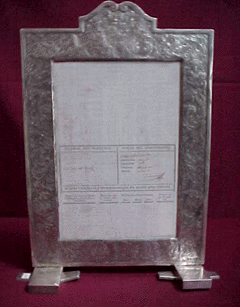

ARMAS
Detalle de la foja de servicio de José de San Martín durante su paso por el ejército español.
Rosario perteneciente al General San Martin.
Escudo que perteneció a las pistoleras de arzon de San Martin.
Mate personal del General José de San Martin.
Jarra y bandeja de plata que pertenecieron al General San Martin.
Detalle del uniforme de jefe de Granaderos de San Martin.
Libros que fueron propiedad del General San Martin.
Medalla entregada a San Martin por su participación en la batalla de Chacabuco.
Reloj de bolsillo perteneciente al General Arenales.
Libro de tácticas militares propiedad del General Pacheco.
